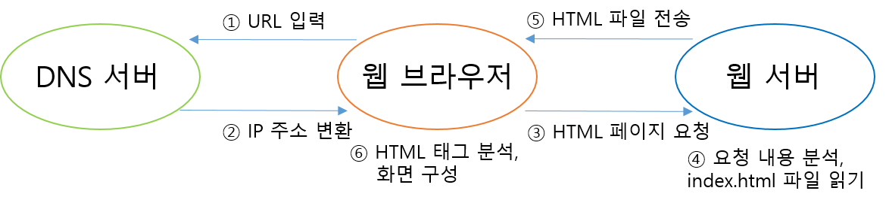

HTML로 만들어진 콘텐치는 웹 서버라고 하는 별도의 서버 S/W를 통해 서비스로 제공되며
웹 서버 S/W로는 아파치가 대표적이다.
또한 웹 서비스를 요청한 클라이언트에서 서비스를 이용하려면 웹 브라우저 라고 하는 클라이언트가 필요한데,
우리가 자주 사용하는 MS 엣지, 구글 크롬, 사파리 등이 이에 해당한다.
일반적인 HTML을 중심으로 한 웹의 동작 과정은 다음과 같다.
1. 웹 브라우저에서 도메인(URL)을 입력한다.
2. DNS 서버는 해당 도메인을 가진 IP 주소를 웹 브라우저에 제공한다.
3. 웹 브라우저는 IP주소의 해당 서버 80번 포트로 접속을 시도하고, 도메인의 웹서버는 접속을 대가하다 요청이 들어오면 수락한다.
4. 웹 서버는 요청 내용을 분석하고 요청된 html파일을 디스크에서 읽는다.
5. 웹 서버는 파일 내용을 텍스트 그대로 요청한 클라이언트에 전송한다.
6. 웹 브라우저는 웹 서버로부터 받은 텍스트 내용 중 HTML 태그를 분석하고 적절히 변환하여 화면을 구성한다.
